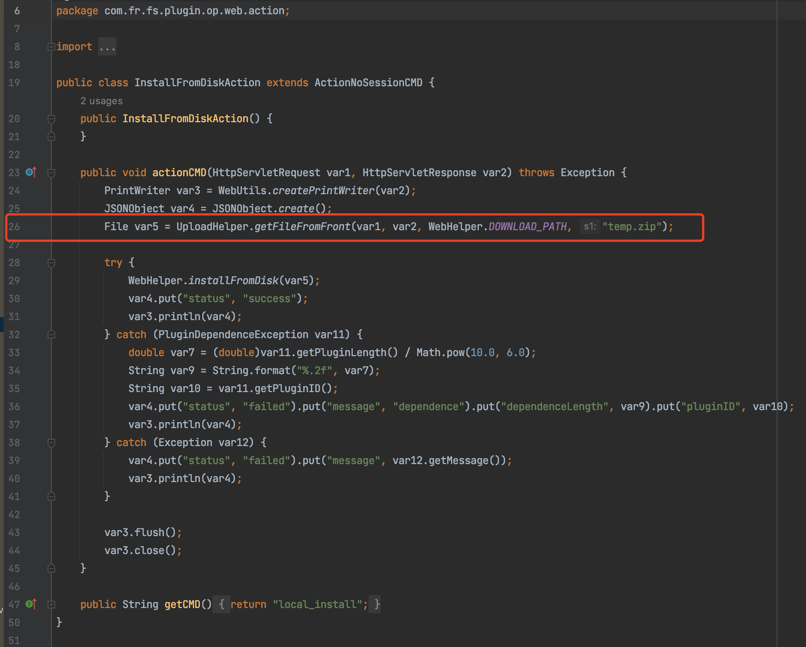
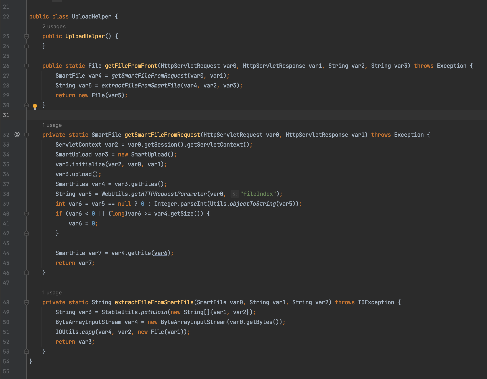
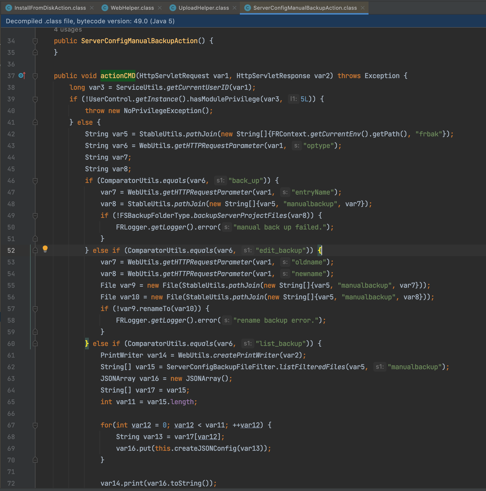

前言
最近在项目中遇到了FineReport后台上传插件时数据包过大上传失败，但内部扫描器的POC却能检测到漏洞，所以找了很久旧版本安装包来分析一下代码。
漏洞分析
插件上传在com.fr.fs.plugin.op.web.action.InstallFromDiskAction#actionCMD

在26行进行文件上传操作，WebHelper.DOWNLOAD_PATH值默认为”/cache”，跟进com.fr.fs.plugin.op.web.helper.UploadHelper#getFileFromFront，为获取文件内容后写入/cache/temp.zip。

在InstallFromDiskAction中的actionCMD方法，文件上传成功后会自动进行插件安装，安装失败则抛出错误，但不会删除temp.zip文件。
然后利用系统备份功能com.fr.fs.web.service.ServerConfigManualBackupAction#actionCMD，移动和重命名temp.zip。

当optype参数为edit_backup时，接收oldname、newname两个参数，然后调用File类的renameTo方法将oldname进行移动及重命名为newname，此处的默认目录为frbak。
漏洞利用
之前遇到这个漏洞，都是在插件zip内放入webshell，部署插件进行备份，这种方法经常会遇到插件版本不匹配的问题，但数据包过大传不上去还是第一次。
部署插件利用的是com.fr.fs.plugin.op.web.helper.WebHelper#installFromDisk的解压操作释放webshell，但其实不难看出实际不需要部署插件，只需要利用插件上传功能将我们的webshell落地到temp.zip后，进行后续的移动及重命名就可以了。
思考
以前遇到nday都是用公开的poc去打，这次也是机缘巧合才会去翻代码，想起P牛说过很少参照别⼈的文章来学习，确实也要有所改变了。